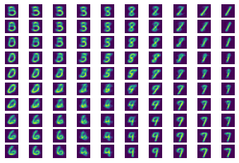

自动编码器
在训练 CNN 时，其中一个问题是我们需要大量标记数据。在图像分类的情况下，我们需要将图像分为不同的类别，这需要手动操作。
课前测验
然而，我们可能希望使用原始（未标记）数据来训练 CNN 特征提取器，这称为自监督学习。我们将使用训练图像作为网络的输入和输出。自动编码器的主要思想是我们将有一个编码器网络，将输入图像转换为某种潜在空间（通常它只是一个较小尺寸的向量），然后解码器网络的目标是重建原始图像。
✅ 自动编码器 是“一种用于学习无标签数据的有效编码的人工神经网络类型。”
由于我们训练的是一个自动编码器来尽可能多地捕获原始图像中的信息，以实现精确的重建，网络尝试找到输入图像的最佳嵌入来捕获其含义。

图片来自 Keras 博客
使用自动编码器的场景
尽管重建原始图像本身看起来没有多大用处，但在某些情况下，自动编码器特别有用：
- 降低图像的维度用于可视化或训练图像嵌入。通常自动编码器比 PCA 结果更好，因为它考虑了图像的空间性质和层次特征。
- 去噪，即去除图像中的噪点。因为噪点携带了大量无用信息，自动编码器无法将其全部塞入相对较小的潜在空间，因此它只捕获图像的重要部分。在训练去噪器时，我们从原始图像开始，并使用人工添加噪点的图像作为自动编码器的输入。
- 超分辨率，增加图像分辨率。我们从高分辨率图像开始，使用低分辨率图像作为自动编码器的输入。
- 生成模型。一旦我们训练了自动编码器，解码器部分可以用于从随机潜在向量开始创建新对象。
变分自动编码器 (VAE)
传统的自动编码器以某种方式降低输入数据的维度，找出输入图像的重要特征。然而，潜在向量往往没有多大意义。换句话说，以 MNIST 数据集为例，弄清楚哪些数字对应不同的潜在向量并非易事，因为接近的潜在向量不一定对应于相同的数字。
另一方面，要训练生成模型，了解潜在空间会更有帮助。这一想法引导我们到 变分自动编码器 (VAE)。
VAE 是一种学习预测潜在参数的统计分布的自动编码器，即所谓的潜在分布。例如，我们可能希望潜在向量按照某种均值 zmean 和标准偏差 zsigma（均值和标准差都是某个维度 d 的向量）正常分布。VAE 中的编码器学习预测这些参数，然后解码器从这个分布中抽取一个随机向量来重建对象。
总结：
- 从输入向量中，我们预测
z_mean和z_log_sigma（我们预测其对数而不是标准偏差本身） - 我们从分布 N(zmean,exp(zlog_sigma)) 中抽取一个向量
sample - 解码器尝试使用
sample作为输入向量解码原始图像

图片来自 这个博客帖子 由 Isaak Dykeman 撰写
变分自动编码器使用一个由两个部分组成的复杂损失函数：
- 重建损失是展示重建图像与目标图像接近程度的损失函数（可以是均方误差，或 MSE）。它与普通自动编码器中的损失函数相同。
- KL 损失确保潜在变量分布保持接近正态分布。它基于 Kullback-Leibler 散度 概念 - 一种估计两个统计分布相似程度的度量。
VAE 的一个重要优点是我们可以相对轻松地生成新图像，因为我们知道从何种分布中抽取潜在向量。例如，如果我们在 MNIST 上训练带有 2D 潜在向量的 VAE，我们可以随着潜在向量组件的变化得到不同的数字：

图片由 Dmitry Soshnikov 提供
观察如何图像相互融合，因为我们开始从潜在参数空间的不同部分获取潜在向量。我们还可以在 2D 中可视化此空间：

图片由 Dmitry Soshnikov 提供
✍️ 练习：自动编码器
在这些相应的笔记本中了解更多关于自动编码器的知识：
自动编码器的属性
- 数据特定化 - 它们只能很好地处理训练过的图像类型。例如，如果我们在花卉上训练一个超分辨率网络，它在肖像上效果不会很好。这是因为网络可以通过从训练数据集中学得的特征中获取细节来生成更高分辨率的图像。
- 有损 - 重建的图像与原始图像不同。损失的性质由训练过程中使用的损失函数决定
- 适用于 无标记数据
课后测验
总结
在本课中，您了解了 AI 科学家可用的各种类型的自动编码器。您学习了如何构建它们，并如何使用它们重建图像。您还学习了 VAE 以及如何使用它来生成新图像。
🚀 挑战
在本课中，您学习了如何使用自动编码器处理图像。但它们也可以用于音乐！查看 Magenta 项目的 MusicVAE 项目，该项目使用自动编码器学习重建音乐。使用此库进行一些实验 来看看您能创作出什么。
课后测验
复习与自学
作为参考，请阅读更多关于自动编码器的资源：
作业
在 此使用 TensorFlow 的笔记本 的末尾，您会发现一个“任务” - 使用它作为您的作业。